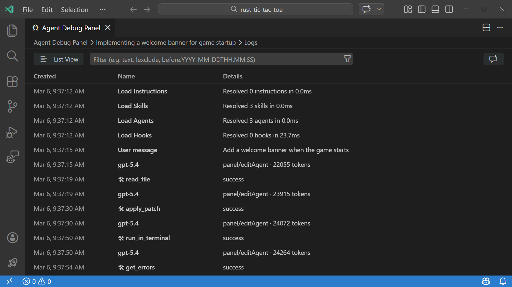
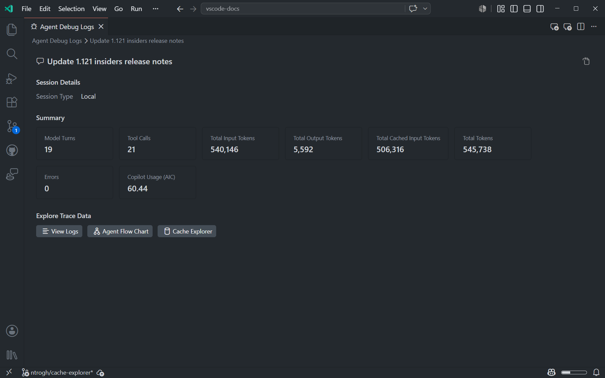
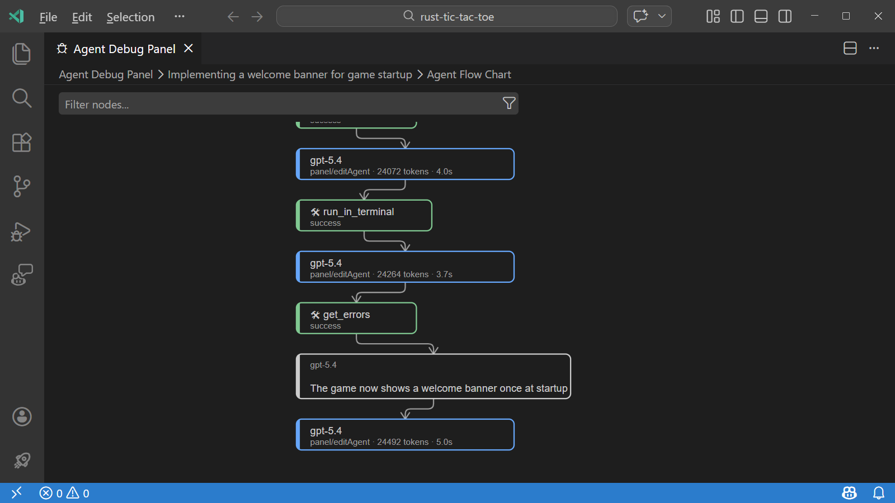
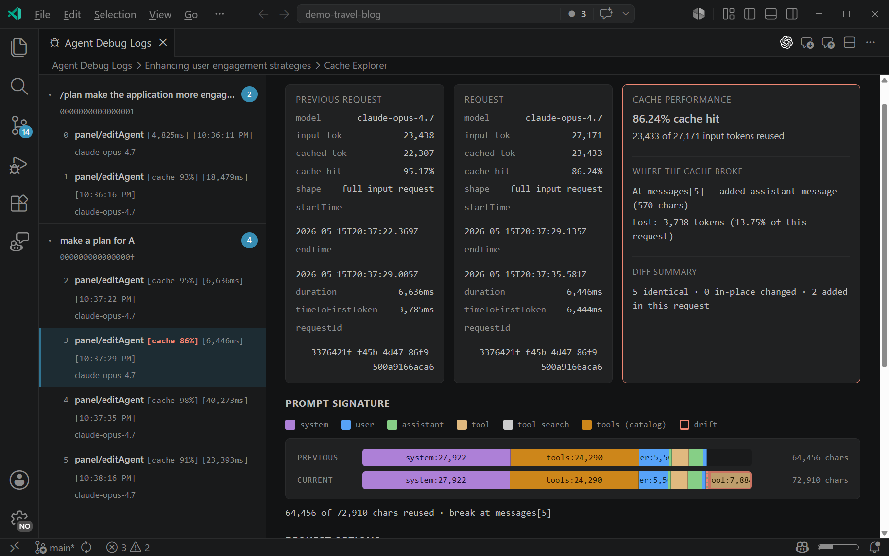
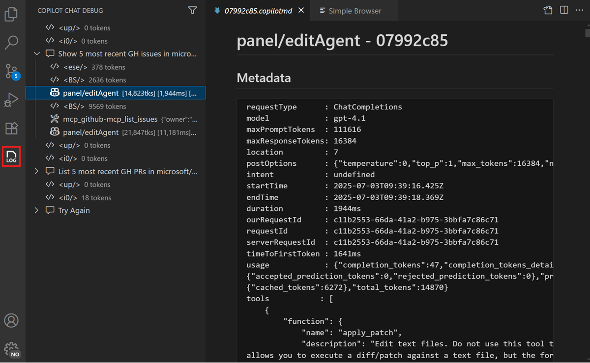

调试聊天交互
Visual Studio Code 提供了一些工具，可帮助你了解向 AI 发送提示时发生了什么。使用这些工具可以检查代理如何发现提示文件、调用工具、发出语言模型请求以及生成响应。
VS Code 提供了两个互补的调试工具：
- 代理调试日志面板（预览版）显示聊天会话期间发生的所有事件的按时间顺序排列的事件日志，包括工具调用、LLM 请求、提示文件发现和错误。
- 聊天调试视图显示每个 LLM 请求和响应的原始详细信息，包括完整的系统提示、用户提示、上下文和工具调用负载。
代理调试日志面板
[!NOTE]
代理调试日志面板目前处于预览阶段。
代理调试日志面板是了解发送提示时发生了什么的主要工具。它显示聊天会话期间代理交互的按时间顺序排列的事件日志，这在调试自定义代理和编排的子代理工作流时特别有用。
要打开代理调试日志面板：
- 启用以下设置：
setting(github.copilot.chat.agentDebugLog.fileLogging.enabled)
- 选择聊天视图中的省略号（...）菜单，然后选择显示代理调试日志。
- 从命令面板运行开发者：打开代理调试日志。
你可以在代理调试面板中的四个视图之间切换：
- 日志：会话期间事件的按时间顺序列表，带有筛选选项以聚焦特定事件类型。
- 代理流程图：一个流程图，可视化了会话期间代理与子代理之间的交互。
- 摘要：关于会话的汇总统计信息，例如总工具调用次数、令牌使用量、错误计数和总持续时间。
- 缓存资源管理器：连续模型请求的并排差异对比，帮助诊断提示缓存未命中。
[!NOTE]
代理调试日志面板现在同时显示当前和历史会话。日志会持久保存在本地磁盘上，允许你查看历史会话。
日志视图
日志视图显示聊天会话期间发生的事件的按时间顺序排列的列表。每个事件包含时间戳、事件类型和摘要信息。你可以展开每个事件以查看更多详细信息，例如 LLM 请求的完整系统提示或工具调用的输入和输出。

你可以在扁平列表和按子代理分组事件的树状视图之间切换。使用筛选选项来聚焦特定事件或事件类型。
日志视图是打开代理调试面板时的默认视图。你也可以从摘要视图中选择查看日志切换到日志视图。
摘要视图
摘要视图提供关于聊天会话的汇总统计信息，例如总工具调用次数、令牌使用量、错误计数和总持续时间。

从摘要视图中，你可以选择查看日志、代理流程图或缓存资源管理器切换到其中一个视图。
要打开摘要视图：
- 通过选择聊天视图中的省略号（...）菜单并选择显示代理调试日志来打开代理调试面板。
- 选择面板顶部面包屑中的会话描述。
代理流程图视图
代理流程图视图可视化了事件顺序和代理之间的交互，使理解复杂的编排更加容易。

你可以平移和缩放流程图，并选择流程图中的任何节点以查看有关该事件的详细信息。
要打开流程图视图，请从摘要视图中选择代理流程图。
- 通过选择聊天视图中的省略号（...）菜单并选择显示代理调试日志来打开代理调试面板。
- 选择面板顶部面包屑中的会话描述。
- 从摘要视图中选择代理流程图。
缓存资源管理器视图
缓存资源管理器视图通过比较会话中连续的模型轮次请求来帮助你诊断提示缓存未命中。提示缓存允许语言模型提供商重用与先前请求匹配的请求前缀，从而减少延迟和令牌成本。当缓存命中率较低时，缓存资源管理器可以精确定位提示前缀分叉的位置。

该视图有两个面板：
- 会话中所有模型轮次的列表，按用户请求分组。每个轮次显示缓存命中百分比、持续时间、模型名称和时间戳。选择一个轮次可将其与前一个轮次进行比较。
- 主要内容显示当前请求与先前请求之间的并排前缀差异。
主要内容区域包含以下信息：
- 缓存性能：缓存命中百分比和从总数中重用的输入令牌数量。
- 提示签名：请求中每个组件的可视化摘要（系统指令、工具定义和消息），带有颜色编码的状态指示器。第一个分叉点标记了提示缓存中断的位置。
- 组件：系统指令、工具定义和各个消息的可展开部分，显示两个请求之间的文本级差异。
要打开缓存资源管理器视图：
- 通过选择聊天视图中的省略号（...）菜单并选择显示代理调试日志来打开代理调试面板。
- 选择面板顶部面包屑中的会话描述以转到摘要视图。
- 选择缓存资源管理器以打开所选会话的缓存资源管理器视图。
将调试事件附加到聊天
你可以将代理调试事件的快照附加到聊天对话中，并向 AI 询问关于当前会话的问题。这对于了解令牌使用量、加载了哪些自定义、发生了哪些工具调用以及请求花费了多长时间非常有用。
要将调试事件附加到聊天：
- 为你的聊天会话打开日志视图
- 选择代理调试面板右上角的星形图标。这将打开聊天视图，并将调试事件快照作为上下文附加。
或者，你可以使用 /troubleshoot 斜杠命令直接询问关于聊天会话的问题，而无需先打开代理调试面板。例如，输入 /troubleshoot list all paths you tried to load customizations 或 /troubleshoot how many tokens did you use in #session。
[!NOTE]
/troubleshoot命令需要启用setting(github.copilot.chat.fileLogging.enabled)设置。
导出和导入会话
你可以将调试会话导出为 Open Telemetry JSON（OTLP 格式）文件，以便与他人分享或离线分析。你也可以导入之前导出的文件以在代理调试面板中查看。
要导出会话：
- 打开代理调试日志面板并导航到要导出的会话。
- 选择面板右上角工具栏中的导出图标（下载）。
- 选择一个位置来保存 JSON 文件。
如果没有选择会话，VS Code 会显示一条通知，指出没有可导出的活动调试会话。
要导入会话：
- 选择代理调试日志面板右上角工具栏中的导入图标（上传）。
- 选择之前导出的 JSON 文件。
导入的会话会在代理调试日志面板中打开，并显示其概览和指标，就像实时会话一样。
[!NOTE]
导入大于 50 MB 的文件会显示一个包含实际文件大小的警告对话框。如果遇到此警告，请考虑裁剪文件或导出较短的会话。
聊天调试视图
聊天调试视图显示每个 AI 请求和响应的原始详细信息。当你需要检查确切的系统提示、用户提示、上下文或发送到语言模型和从语言模型接收的工具响应负载时，请使用它。
打开聊天调试视图
要打开聊天调试视图：
- 选择聊天视图中的溢出菜单，然后选择显示聊天调试视图。
- 从命令面板运行开发者：显示聊天调试视图命令。

阅读调试输出
聊天调试视图中的每个交互都包含可展开的部分：
| 部分 | 显示内容 | 需要关注的内容 | ||
|---|---|---|---|---|
| --- | --- | --- | ||
| 系统提示 | 定义 AI 行为、能力和约束的指令。 | 验证自定义指令或代理描述是否正确显示。 | ||
| 用户提示 | 发送到模型的提示的准确文本。 | 确认你的提示按预期发送，包括任何已解析为实际内容的 #-提及。 | ||
| 上下文 | 附加到请求的文件、符号和其他上下文项。 | 检查预期的文件和上下文是否出现。如果文件缺失，可能未被索引或上下文窗口已满。 | ||
| 响应 | 模型响应的完整文本，包括推理。 | 查看原始响应以了解模型如何解释你的请求。 | ||
| 工具响应 | 请求期间调用的工具的输入和输出。 | 验证工具收到了正确的输入并返回了预期的输出。对于调试 MCP 服务器非常有用。 |
你可以展开每个部分以查看完整详细信息。这在使用代理时特别有用，因为单个请求中可能会调用多个工具。
常见故障排除场景
AI 忽略了你的工作区文件
如果 AI 以通用信息响应而不是引用你的代码库：
- 打开代理日志并检查发现事件以验证工作区文件是否已被索引。
- 打开聊天调试视图并检查上下文部分，以验证工作区文件是否出现在上下文中。如果没有，请检查工作区索引是否处于活动状态。
- 尝试添加显式的
#-提及（例如#file或#codebase）以确保包含正确的文件。了解更多关于管理上下文的信息。MCP 工具未被调用
如果 AI 没有调用预期的工具：
- 打开代理日志并检查工具调用筛选器，以查看工具是否被调用或被跳过。
- 打开聊天调试视图并检查系统提示部分，以验证工具是否列在可用工具中。
- 如果工具缺失，请验证 MCP 服务器是否正在运行且配置正确。
- 尝试在提示中使用
#tool-name显式提及该工具。AI 响应不完整或被截断
如果响应看起来被截断了：
- 检查代理日志中的 LLM 请求事件以查看令牌使用情况。
- 上下文窗口已满可能导致模型截断其响应。启动新的聊天会话以重置上下文。
提示文件未生效
如果自定义指令或提示文件似乎没有生效：
- 打开代理日志并检查发现事件，以查看文件是否已加载、被跳过或验证失败。
- 验证文件位置和
applyTo模式是否与当前上下文匹配。 - 检查聊天自定义诊断以获取错误详细信息。
相关资源
- 聊天概览
- 管理 AI 上下文
- 在 VS Code 中排除 AI 故障
- 在 VS Code 中使用 AI 的安全注意事项